How to use the shop till
A quick guide for studio sitters
The shop till is on your phone, in the freelancer portal. Use it to check a price at any time, and to sell drinks, strings, gaffa and the rest on the night of your shift.
Every sale goes straight to the office, so there's nothing to write down.
Stuck at the till? Tap How to use at the top of the till to come back to this guide.
Five things to remember
- Find the item and hand it over before you finish the sale.
- More than one band in? Check which room it's for before you pick a band.
- A card payment isn't done until the phone says so. Keep the till open while they pay.
- Made a mistake? Cancel it straight away. After a couple of minutes it's gone to the office, so leave a handover note instead.
- Anything else odd? Leave a handover note on your shift page. The office checks every till sale the next morning.
1
Open the till
On your dashboard, find tonight's Studio Sitter card and tap View details.
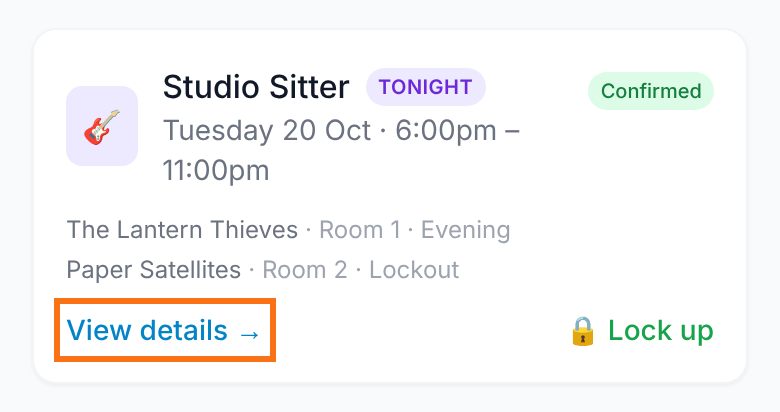
On your shift page, tap Shop till.
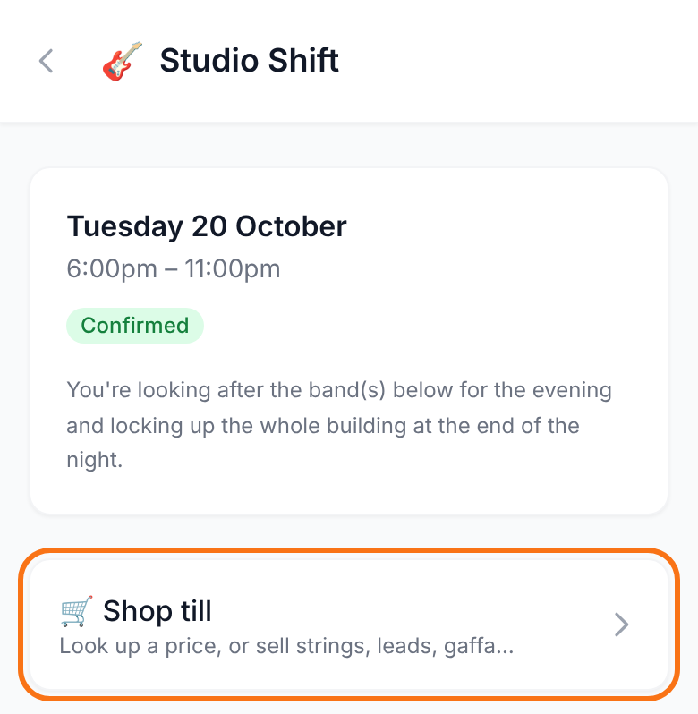
2
Look up a price
Type a word or two into the search box, for example coke or gaffa. Prices include VAT.
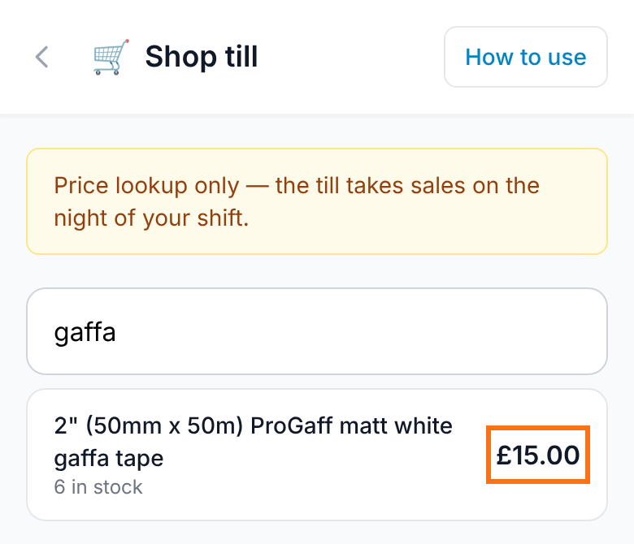
You can check prices any time. On any day that isn't your shift, the till says Price lookup only: you can see prices, but you can't sell.
Selling opens on the day of your shift and stays open until you lock up.
The stock figure is what the office system thinks is on the shelf. It isn't always right, so check the shelf.
3
Add items to the basket
Search for the item and tap it to add it.
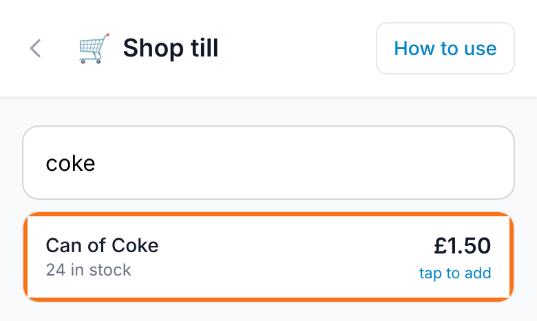
Use the plus and minus buttons to change how many. Each line shows its own price.
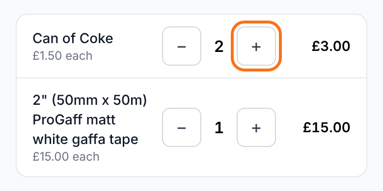
Says none showing in stock? The till still lets you sell it. Check the shelf first, and only sell it once it's in your hand.
4
Who's it for?
- Walk-in: anyone who isn't one of tonight's bands.
- A band: tap their name. Each band shows its room underneath.
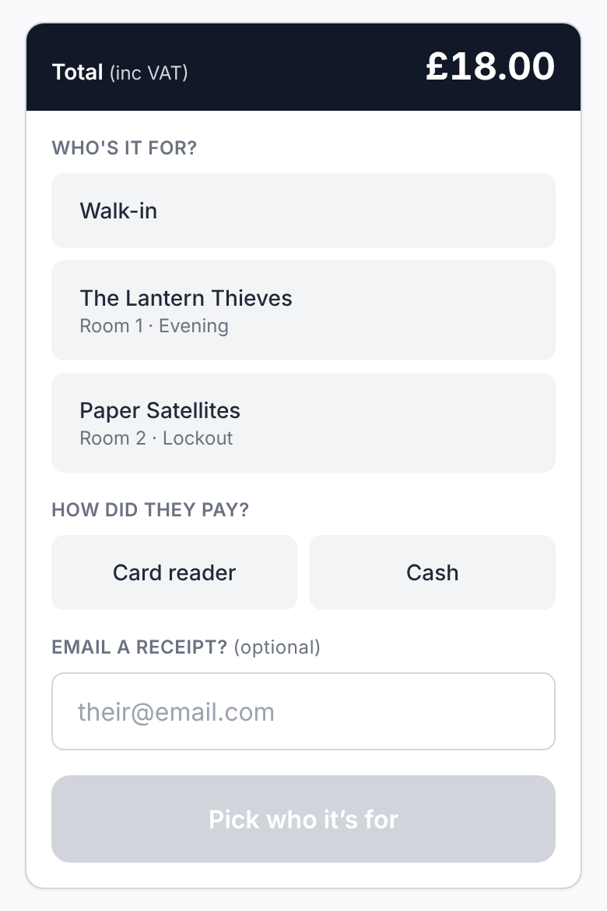
If only one band is in, they're picked for you. If more than one is in, you have to pick, so check which room they're in.
The grey button tells you what's still missing, for example Pick who it's for.
5
How did they pay?
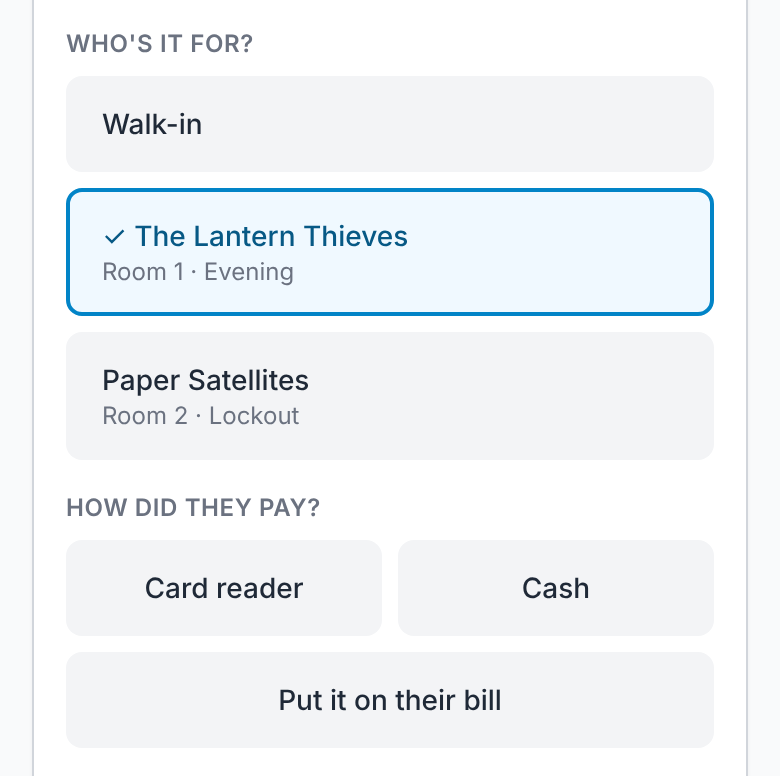
- Card reader: the card machine on the front desk. It's always on. See step 7.
- Cash: goes in the cash till on the front desk, which has change in it. See step 6.
- Put it on their bill: nothing is paid tonight; it goes on the band's bill with us. This only shows once you've picked a band. See step 9.
6
Taking cash
Tap Cash, then the green Take button.
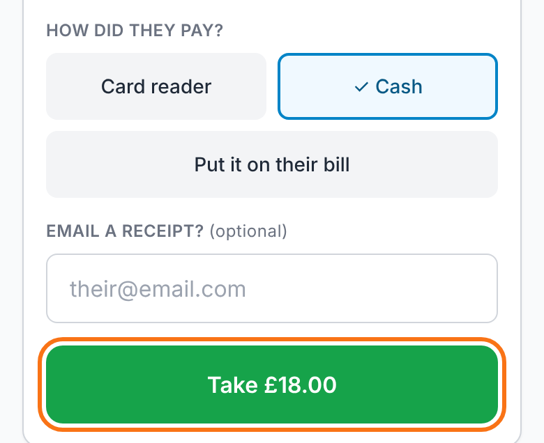
Put the money in the cash till on the front desk and give them their change.
A green message confirms the sale is recorded. That's it.
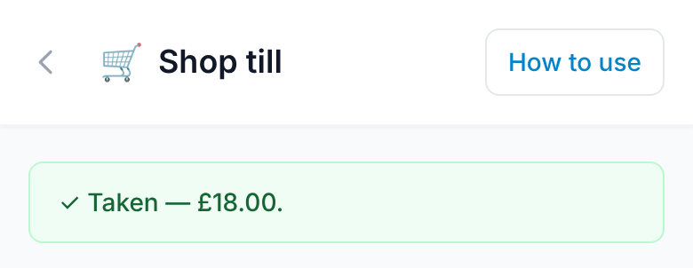
If the till says it couldn't reach the office system, nothing was recorded. Check your signal and try again.
7
Taking a card
Tap Card reader, then Take £… on card reader. The amount appears on the card reader on the front desk.
Ask them to tap their card (or insert it, if the reader asks).
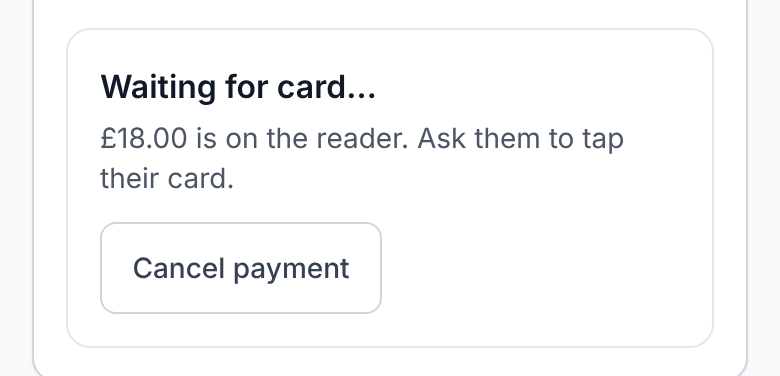
When the card is approved, the phone shows a green message and the sale is recorded. You don't need to do anything else.
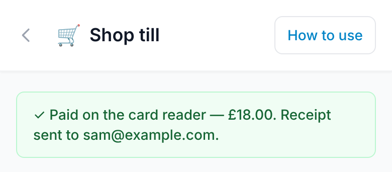
Keep the till open on your phone until you see the green message.
8
If the card doesn't go through
If the card is declined, the till says Not taken. Nothing has been charged.
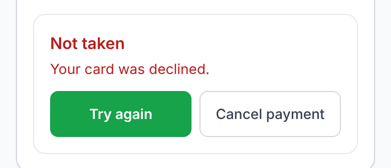
- To try again (or with another card), tap Try again.
- To pay another way, tap Cancel payment, then pick Cash.
- Changed their mind while the reader is waiting? Tap Cancel payment. Nothing is taken.
Very rarely, the till says the card was charged but the sale didn't record. Don't take the payment again. The office has already been told; just leave a handover note.
9
Putting it on their bill
Pick the band, tap Put it on their bill, then the green button.
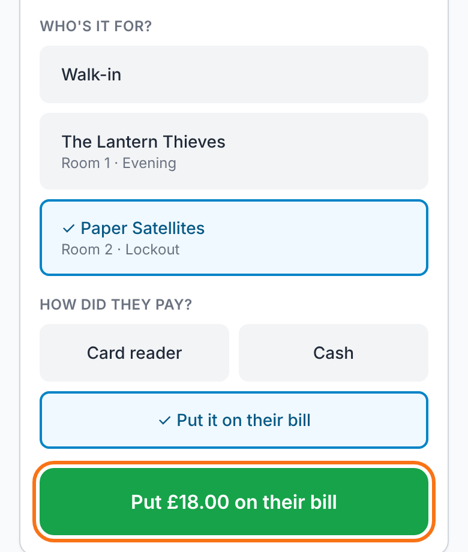
Nothing is paid tonight and there's no receipt: it will be on their invoice.
More than one band in? Double-check which room it's for before you tap.
10
Emailing a receipt
Receipts are optional. If they want one, fill in the email box before you take the payment.
If the band has contacts on file, they show as buttons above the box. Tap one, or type any address.
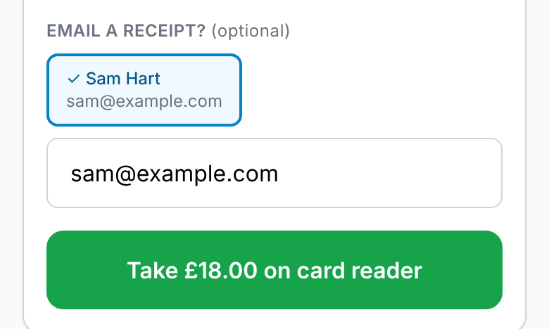
Forgot? Tap Receipt next to the sale in Tonight's list (step 11).
There's no receipt for Put it on their bill.
11
Tonight's sales and mistakes
Every sale from tonight is listed at the bottom of the till, with totals for cash, card and bills.
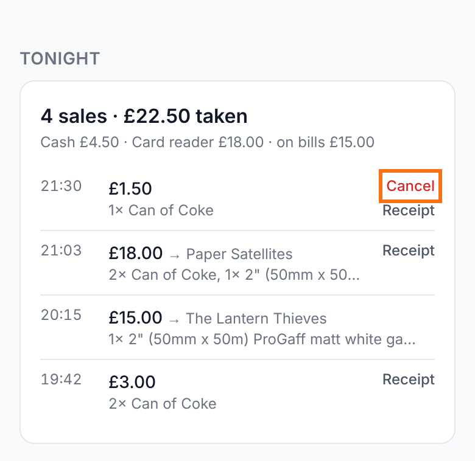
- Made a mistake? Tap Cancel next to the sale straight away, then do it again properly.
- Cancel only shows for a couple of minutes, until the sale has gone through to the office.
- Spotted it too late? Leave a handover note saying what went wrong, and the office will sort it out.
12
Locking up
The lock-up report shows what the till took tonight.
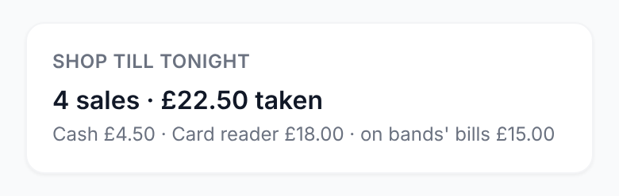
Once you send the lock-up report, the till closes for the night. You can still look up prices.
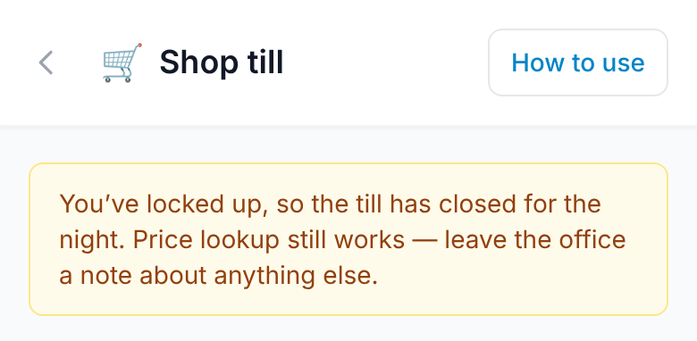
Sold something after locking up? Leave a handover note.
?
If something goes wrong
- It says "Price lookup only"
- It isn't the day of your shift. You can check prices, but you can't sell until the day.
- It couldn't reach the office system
- Nothing was recorded. Check your signal and try again.
- I can't find an item
- Try a different word, for example coke rather than coca-cola. Still not there? Leave a handover note.
- Wrong band, wrong payment or wrong amount
- Cancel it from Tonight's list straight away and do it again. Too late to cancel? Leave a handover note.
- The card was declined
- Nothing was charged. Try again, try another card, or cancel and take cash (step 8).
- Anything else
- Leave a handover note on your shift page, under Handover notes. The office checks every till sale the next morning.